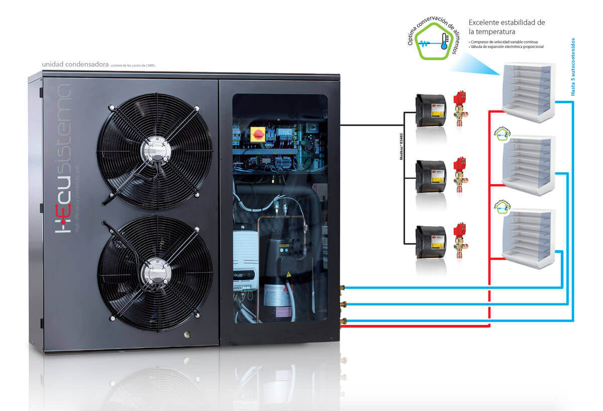

La unidad condensadora se mantiene en comunicación permanente con los auto contenidos refrigerados, así como de las condiciones externas que afectan la eficiencia del sistema.
El uso de este sistema garantiza la reducción del consumo energético, mejorando la huella ambiental del proceso de refrigeración industrial. Puede controlar hasta un máximo de cinco evaporadores por unidad condensadora, disponible en configuración de media y baja temperatura. La instalación y puesta en marcha es fácil, simple e intuitiva.
Tiene la posibilidad de comunicarse a un sistema de monitoreo externo vía Modbus RS485.
Contiene
- Tecnologías de última generación
- Compresores y ventiladores con tecnología BLDC
- Válvulas de expansión electrónicas
- Sistema de control vanguardista HECU de Carel
- Interfaz de usuario simple y de fácil manejo
- Opción de UC para ubicación en techo, vertical, o ajustada a las condiciones de instalación
Eficiencia Energética

Confiabilidad

Operación
